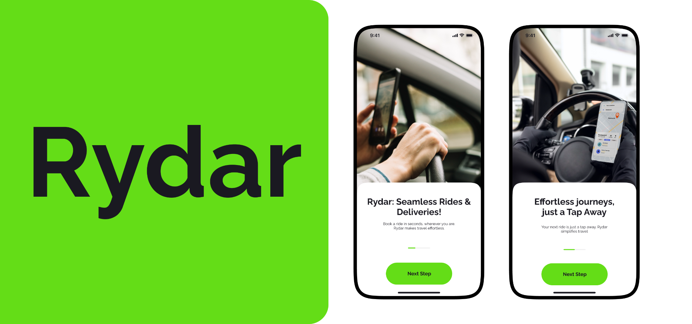
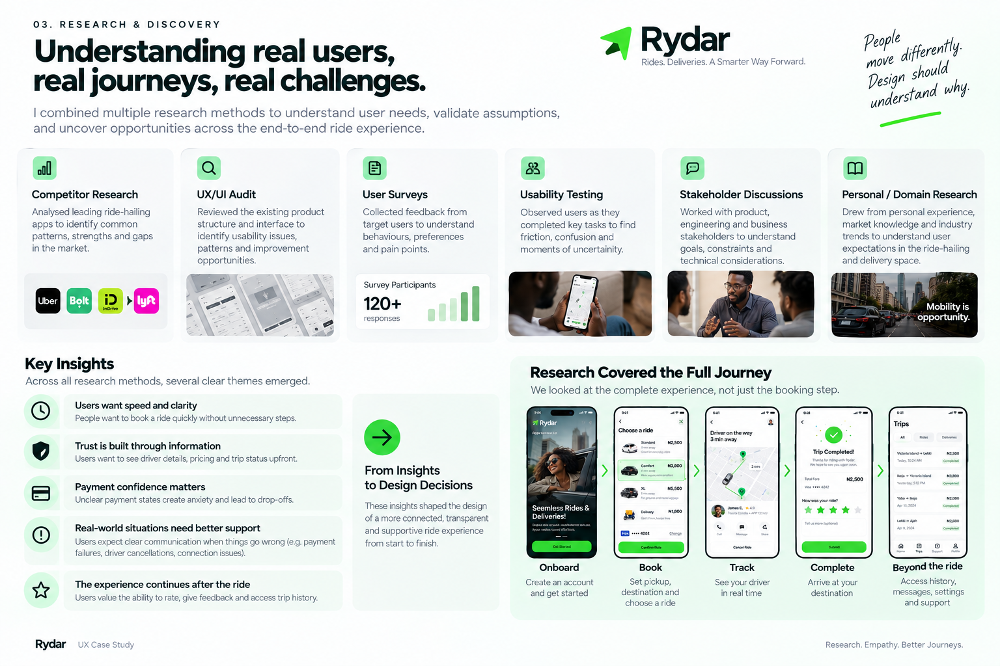
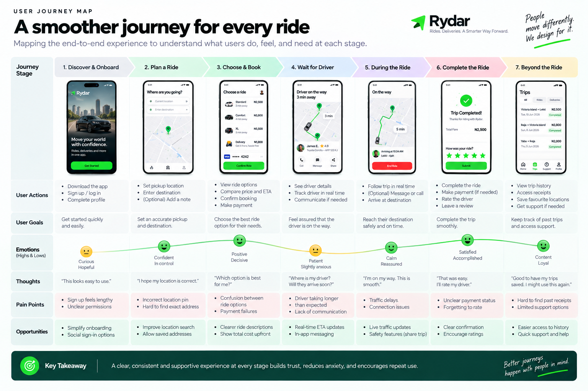
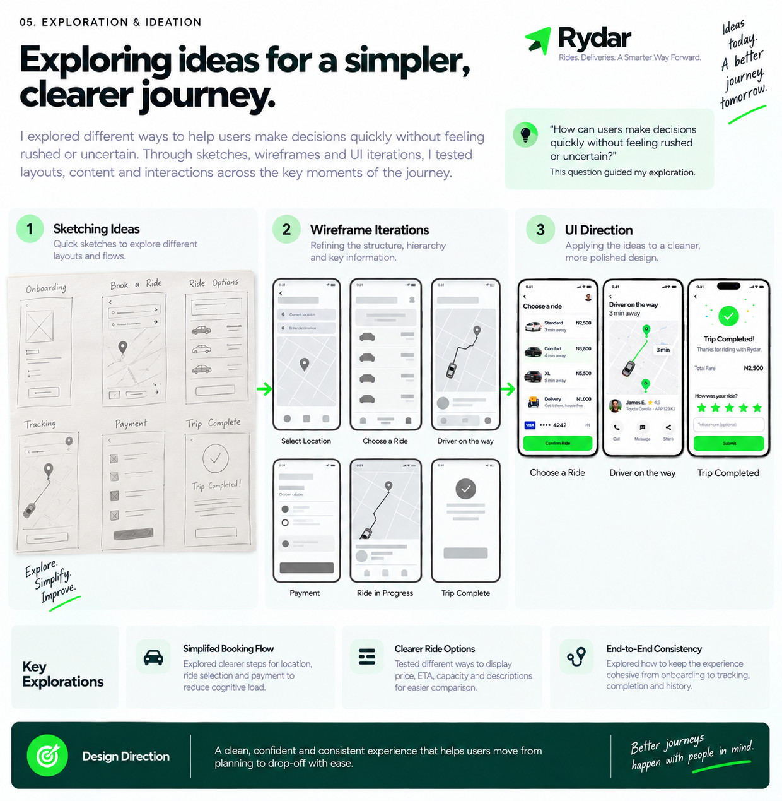
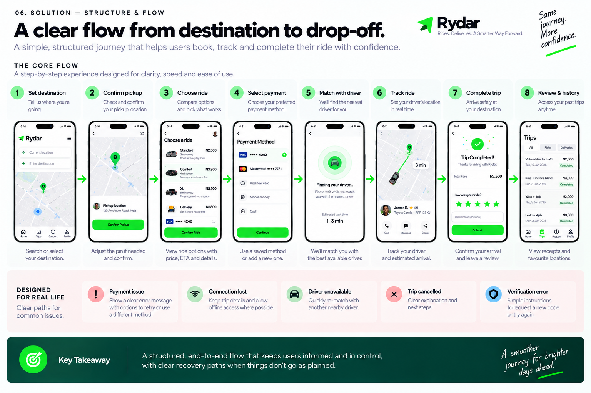

A ride-hailing and delivery experience designed around clarity from booking to drop-off.
Rydar is a mobility platform designed to help users move from finding a destination to completing a trip with less uncertainty along the way.

Rydar is a ride-hailing and delivery platform designed to help users move from finding a destination to completing a trip with less uncertainty along the way.
I worked on the product experience across the core journey, including onboarding, authentication, destination and pickup selection, ride selection, payment, driver tracking, in-trip communication, trip completion, reviews, history, and supporting states such as payment failures, connection issues, driver cancellations, and expired verification codes. The breadth of the experience meant the challenge was not simply designing individual screens, but creating a coherent system that could guide users through different stages of a ride.
The core challenge was to design a ride-booking experience where users could quickly make decisions while still having enough information and control to feel confident about their journey.
This meant making key information such as pickup and destination, vehicle options, pricing, payment status, driver details, and trip progress understandable at the moment users needed it, while also accounting for what happens when the expected journey breaks down.
The resulting product brings these states into one connected experience, from “Where are you going today?” through booking, driver arrival, the ride itself, and post-trip feedback.
The challenge with Rydar was not simply giving users a way to request a ride. The experience had to help users make several decisions in sequence: Where am I going? Where should I be picked up? Which ride fits my needs? How much will it cost? How do I know my driver is coming?
The existing product concept covered a broad journey, but that breadth introduced its own UX challenge. Booking, payment, driver matching, tracking, communication, and post-trip actions all needed to feel like parts of the same experience rather than disconnected screens.
| Principle | Implementation Focus | User Impact |
|---|---|---|
| 1. Reduce Decision Friction | Surface relevant destinations, saved addresses, ride categories, pricing, and payment options at the point of choice. | Users book faster without having to hunt for essential information. |
| 2. Make Progress Visible | Provide live vehicle tracking, clear ETA updates, driver identity cards, and continuous trip progression. | Eliminates waiting anxiety and builds trust throughout the journey. |
| 3. Design for Edge Moments | Direct recovery paths for payment failures, network drops, driver cancellations, and verification issues. | Users never hit dead ends when real-world conditions disrupt the happy path. |
I approached discovery from both the user perspective and the product system. Rather than treating ride booking as a single transaction, I looked at the full journey and the points where users could experience uncertainty or friction.
I combined competitor research, UX/UI auditing, user surveys (120+ responses), usability testing, stakeholder discussions, and domain research. The competitor review helped establish common patterns across ride-hailing experiences, while the UX/UI audit helped identify opportunities within the existing product structure. User surveys and usability testing revealed where passengers felt hesitation and needed clearer reassurance.
One critical discovery was that the experience could not be evaluated only by whether a user could successfully book a ride. The product also needed to communicate what was happening before, during, and after booking, particularly around payment, driver status, trip progress, and unexpected interruptions. That led me to treat error and edge states as first-class citizens of the primary experience.


Exploring different ways to make the journey feel effortless
I explored the experience around one central question: How can users make decisions quickly without feeling rushed or uncertain?

A clear flow from destination to drop-off
I translated research insights into a structured end-to-end user flow guiding passengers smoothly through eight key milestones:
| Step | Milestone | Core Design Feature |
|---|---|---|
| 1 | Set Destination | Recent & saved locations surfaced upfront |
| 2 | Confirm Pickup | Interactive pin adjustment with clear street labels |
| 3 | Choose Ride | Side-by-side comparison of Standard, Comfort, XL & Delivery |
| 4 | Select Payment | Saved cards, mobile money, or cash options |
| 5 | Match with Driver | Radar animation with realistic estimated search timer |
| 6 | Track Ride | Live GPS map, driver info card, call/message shortcuts |
| 7 | Complete Trip | Clear arrival summary with total fare confirmation |
| 8 | Review & History | Quick 5-star rating, driver tipping, and past receipt access |

Real-world journeys face unexpected hurdles. Rydar handles interruptions with dedicated recovery paths:
A more connected experience from booking to completion
The final design unified Rydar's ride-hailing and delivery ecosystem into an intuitive, cohesive mobile journey.
Rydar reinforced that great product design is defined just as much by how it handles edge cases as how it handles the happy path. By prioritizing user certainty, predictable navigation, and supportive error states, the platform creates an experience that passengers can rely on every single day.